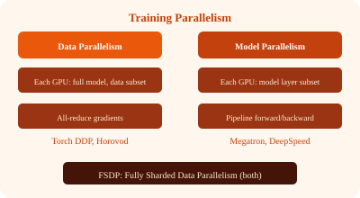

| Paradigm | Description | When to Use |
|---|---|---|
| Single-node | One machine, one GPU | Small models, prototyping, datasets fit in memory |
| Multi-node | Multiple machines, each with GPUs | Large models, large datasets, faster convergence |
Each GPU holds a complete copy of the model. Training data is split across GPUs. After each forward/backward pass, gradients are averaged via all-reduce.
# Data Parallelism with PyTorch DDP
model = MyModel().to(device)
ddp_model = DDP(model, device_ids=[local_rank])
optimizer = torch.optim.Adam(ddp_model.parameters())
for batch in dataloader: # each GPU sees different data
loss = ddp_model(batch)
loss.backward()
optimizer.step() # DDP synchronizes gradients internallyScaling efficiency: ~90% with 16 GPUs, ~75% with 128 GPUs (communication overhead grows).
For models too large to fit on one GPU (e.g., 70B+ parameter LLMs). The model is split across GPUs, with each GPU holding a subset of layers.
An older architecture where workers compute gradients and send them to parameter servers, which update and store model parameters. Workers pull updated parameters periodically.
Hybrid approach: shards model parameters, gradients, and optimizer states across GPUs (like model parallelism) while each GPU processes different data (like data parallelism). Unshards parameters on-demand for forward/backward.
Save model state periodically during training. Crucial for long-running training jobs.
# Checkpoint strategy
- Save every N steps (e.g., every 1000 steps)
- Save on validation metric improvement (best model)
- Save optimizer state for resume capability
- Store checkpoints in durable storage (S3, NFS)
- Async checkpointing: save in background thread, don't block training